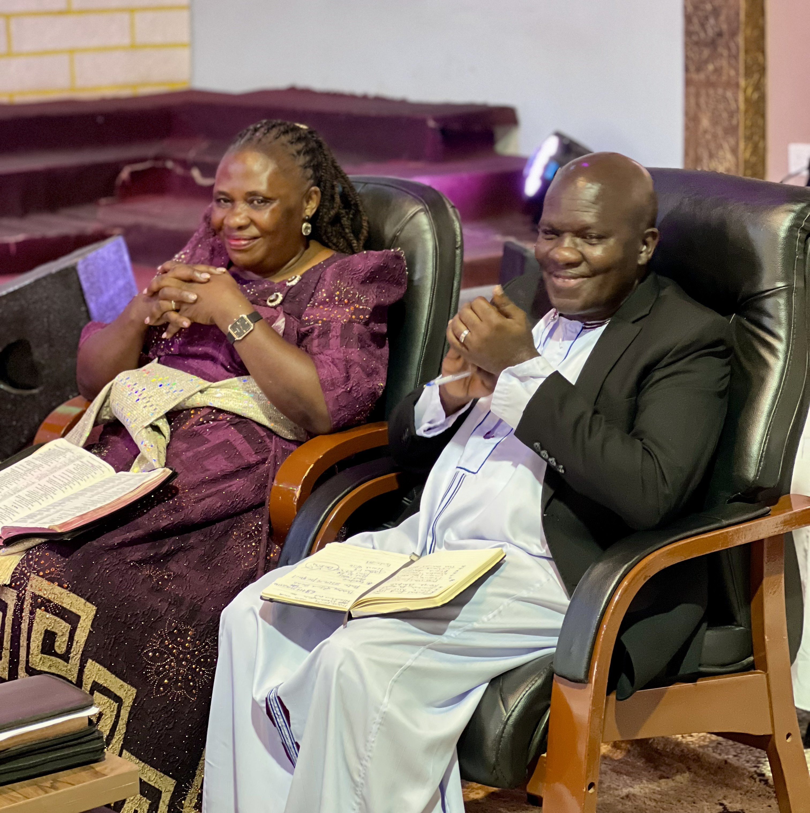

The Holy Gospel Church is an indigenous Ministry in Uganda born in 1977 when the then government led by Idi Amin had placed ban on the operation of all pentecostal churches in the country.
Born-again Christians were not allowed to assemble and if found they were imprisoned or even killed.
This prompted the Ndejje Full Gospel congregation in Ndejje Parish Makindye Ssabagabo led by(Now the late) Bishop George William Mubiru to see God for six days with prayer and fasting to know why the church in Uganda was going through such experience.
It was during this time of humbling themselves before the lord that they received an illumination from the word of God of a call to live a life of Holiness according to Hebn12:14. They started proclaiming the gospel of Holiness and Righteous living to other congregation.
To freely emphasize this Truth, they decided to register this church as the Uganda Church Of the Holy Gospel in 1977, which later changed to The Holy Gospel Church in 1984, to enable them proclaim this message to other nations. Our call is to proclaim the same truth to this generation.
To be Holy unto God and follow peace with all men.
To seek after God, worship and serve Him, and to teach Holiness and Righteousness as the basis for living a lifestyle that that portrays Christ to world.

Holy Gospel Church-Namasuba is under the leardership of Pastor David Nwanyi and Mrs Faith Nwanyi.
Our pastor is dedicated to serving God, leading the church, and helping the congregation grow in faith and holiness.